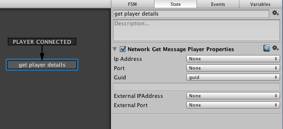
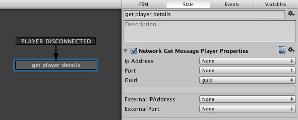
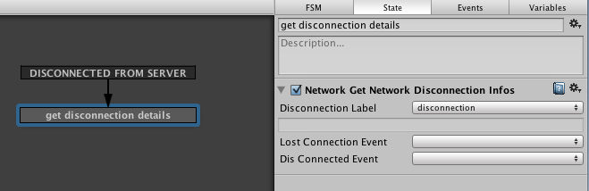
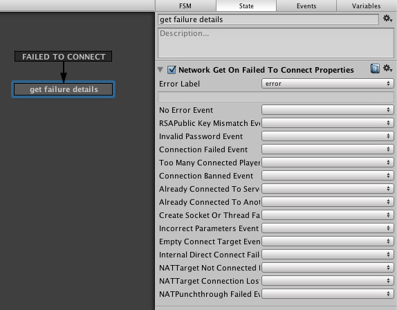
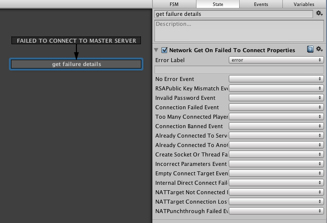

Network Events originate from the unity network messages.
Actions are available to access the data sent by unity network messages. Examples are provided below:
When Network Events are fired, Playmaker stores internally the details sent with that message, so you can retrieve them at any point after that event has fired.
WARNING: It is recommended to get event data as soon as possible, since if the same event is fired again you'll only be getting the details of the very last message sent!
PLAYER CONNECTED
Use Network Get Message Player Properties to retrieve the connected player properties

PLAYER DISCONNECTED
use Network Get Message Player Properties to retrieve the disconnected player properties

SERVER INITIALIZED
CONNECTED TO SERVER
DISCONNECTED FROM SERVER
Use Network Get Network Disconnection Infos to retrieve the network disconnection details.

FAILED TO CONNECT
Use Network Get On Failed To Connect Properties to retrieve the network connection error details.

NETWORK INSTANTIATE
FAIL TO CONNECT TO MASTER SERVER
Use Network Get On Failed To Connect Properties to retrieve the network connection error details.

MASTER SERVER EVENT